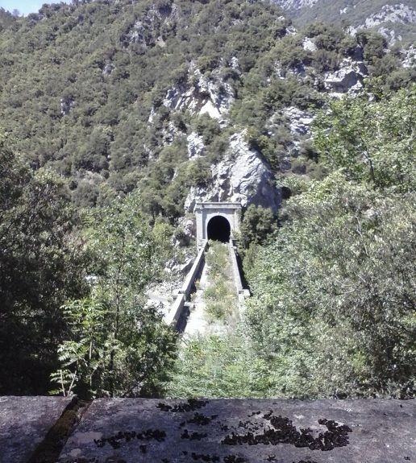
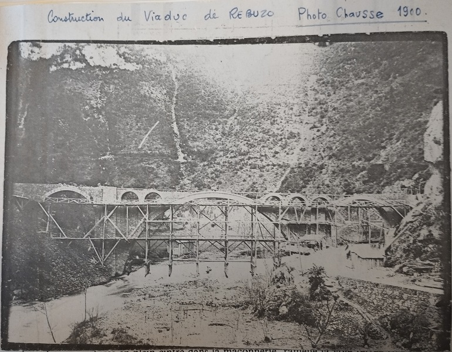
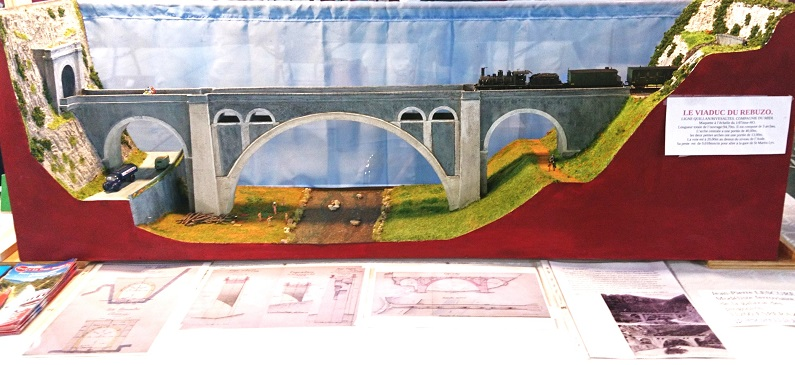
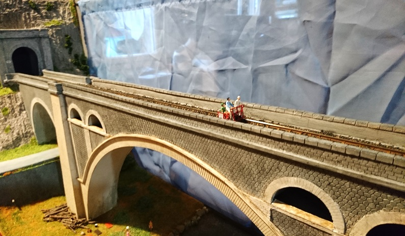
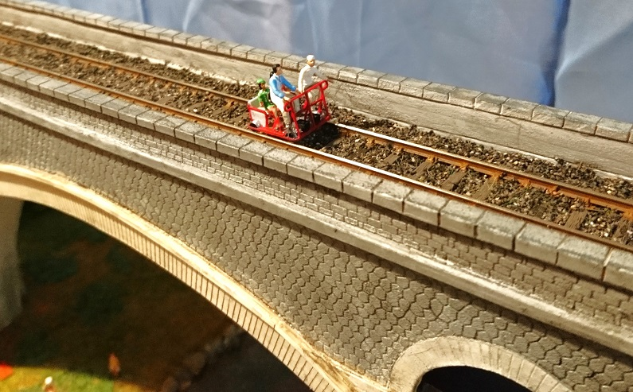

A la sortie de la première courbe de la route départementale après Saint Martin en allant vers Perpignan, se trouve le majestueux viaduc de Rebuzo (ou Rébuzeau) traversant l'Aude entre deux tunnels ferroviaires. A l'intérieur de chacun des deux piliers une cache à mines comme dans le grand tunnel de la Pierre-Lys et à la gare : Vraiment dès la construction on s'est donné les moyens de détruire ce passage "convoité ?" par l'Espagne (rappel du glacis que cette région a longtemps constitué contre les envahisseurs venus du Sud - à cause des razias des guerres jusqu'au traité des Pyrénées, puis avec l'invasion du Roussillon lors de la période révolutionnaire).
Le pont ferroviaire de Rebuzo, d'un tunnel à l'autre
vue depuis le chemin de Planèses

Le pont ferroviaire de Rebuzo, vue depuis le Castel d'en Prat

Le pont ferroviaire de Rebuzo, vue depuis le chemin des Oulious

Le pont ferroviaire de Rebuzo, arche au dessus de la route, et entrée du tunnel de Rebuzo
Le viaduc de Rebuzo en construction - photo de 1900 - transmis par Paul Dumanois
 https://teuliere.github.io/Quelques cartes postales anciennes.

Le pont ferroviaire de Rebuzo
en venant d'Axat

Le pont ferroviaire de Rebuzo
en venant d'Axat aussi, mais avec en arrière plan le pont de l'ane
(centré sous la grande arche),
le photographe a du bien s'amuser...
Il existe des cartes postales anciennes avec vue en venant de St Martin (vues sur internet), mais je ne les ai pas dans ma collection... Il y a une vue qui correspond à cette page sur l'historique de la voie ferrée
Pour des vues de l'intérieur du viaduc, accéder à la page annexe
Historiquement l'aspect du pont tel qu'il est aujourd'hui n'a été envisagé qu'à partir de décembre 1894 avec une décision le 5 mars 1895 (aurait pu ne pas exister à cet endroit - autre parcours traversant le village de St Martin - ou être un pont de fer comme envisagé initialement)

Plan du viaduc du Rébuzo - ouvrage n°30 - dressé le 8 janvier 1898
Pour un plan complet et d'autres informations sur le projet de construction du viaduc
Maquette du viaduc du Rébuzo Construite par Jean-Pierre Lescure, bientôt exposée à la gare d'Axat
  